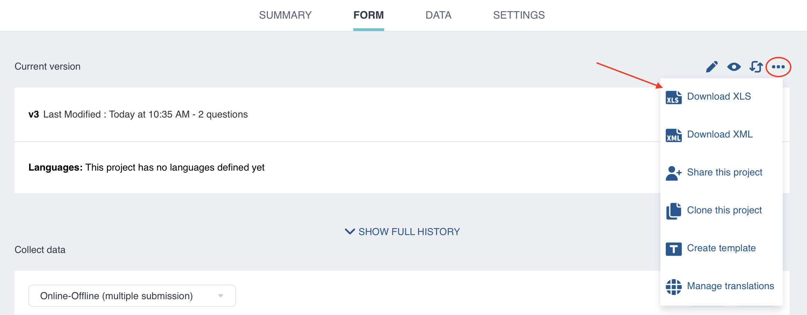
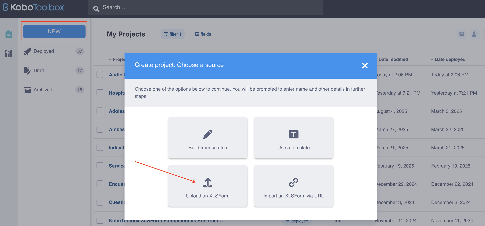
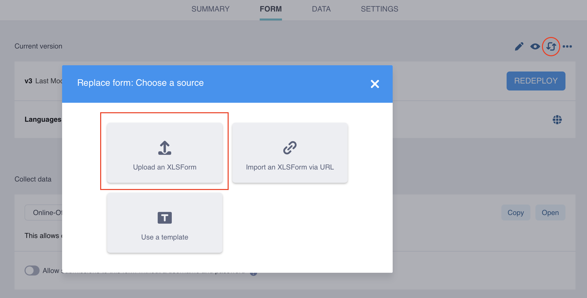
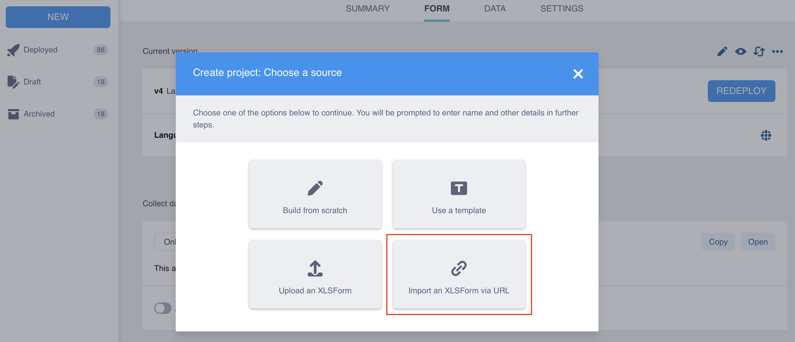

Busca en nuestra documentación, explora nuestros recursos y visita nuestro Foro de la Comunidad para obtener información más detallada
Última actualización: 6 de mayo de 2026
XLSForm se integra fácilmente con KoboToolbox para crear, previsualizar, editar e implementar formularios para la recolección de datos. Por ejemplo, puedes comenzar a construir un formulario en el editor de formularios de KoboToolbox (Formbuilder) y luego descargarlo como XLSForm para personalizarlo con más detalle. Esto proporciona una base estructurada, útil para proyectos nuevos o para usuarios con menos experiencia en la elaboración de formularios.
Una vez personalizados, los formularios creados en XLSForm pueden cargarse en KoboToolbox para su revisión, modificación e implementación.
Este artículo cubre los siguientes temas:
Descargar un XLSForm desde KoboToolbox
Cargar y previsualizar un XLSForm en KoboToolbox
Reemplazar un formulario existente con un XLSForm
Importar un XLSForm a través de una URL
Probar y validar tu XLSForm
Al trabajar en KoboToolbox, es posible que necesites descargar tu formulario como XLSForm para hacer cambios de manera más eficiente, como duplicar muchas preguntas, editar listas de opciones extensas, agregar traducciones o usar funcionalidades avanzadas no disponibles en el Formbuilder. Además, descargar tu formulario como XLSForm te permite construir formularios sin conexión, compartirlos como archivos .xlsx para colaboración y manejo de versiones, y compartirlos con el equipo de soporte de KoboToolbox o en el Foro de la comunidad para solicitar asistencia.
Cualquier formulario creado con el Formbuilder de KoboToolbox puede descargarse como archivo XLSForm:
Ve a la página FORMULARIO de tu proyecto en KoboToolbox.
Haz clic en el icono Otras acciones.
Selecciona Download XLS.

También es posible que necesites crear un nuevo proyecto a partir de un XLSForm que hayas creado desde cero o que te hayan compartido.
Para cargar y previsualizar un XLSForm en un nuevo proyecto en KoboToolbox:
Ve a la página de proyectos en KoboToolbox y haz clic en NUEVO.
Selecciona Cargar un XLSForm y carga tu archivo Excel.
Ingresa los detalles del proyecto y haz clic en Crear proyecto.
Haz clic en el botón Vista previa para previsualizar tu formulario.

Una vez creado un proyecto, puedes reemplazar cualquier formulario existente con un XLSForm actualizado:
Ve a la página FORMULARIO de tu proyecto en KoboToolbox.
Haz clic en Reemplazar formulario en la esquina superior derecha.
Selecciona Cargar un XLSForm y carga tu archivo Excel.

Si usas Google Sheets o almacenas el archivo en Dropbox, puedes importar un XLSForm a través de una URL. La URL debe ser de acceso público e iniciar una descarga del archivo al abrirse en un navegador para que la importación funcione. Los XLSForms también pueden importarse desde software similar, como Excel Web y OneDrive.
Para obtener la URL correcta de una hoja de cálculo de Google Sheets:
Haz clic en Archivo > Compartir > Publicar en la web.
En el menú desplegable Página web, selecciona Microsoft Excel (.xlsx). Mantén seleccionado Documento completo en el primer menú desplegable.
Haz clic en Publicar.
Copia el enlace del documento resultante.
Para más información, consulta la documentación de Google Sheets.
Para obtener la URL correcta de una hoja de cálculo almacenada en Dropbox:
Copia el enlace del archivo en Dropbox haciendo clic en Copiar enlace.
Al final del enlace, reemplaza el sufijo dl=0 por dl=1. Esta será la URL para importar en KoboToolbox.
Una vez obtenida la URL del archivo, puedes importar tu XLSForm en KoboToolbox:
Ve a la página de proyectos en KoboToolbox y haz clic en NUEVO.
Selecciona Importar un XLSForm a través de URL.
Pega tu URL y haz clic en Importar.
Ingresa los detalles del proyecto y haz clic en Crear proyecto.

Nota: Los cambios realizados en un archivo en Dropbox o Google Sheets no se actualizan automáticamente en KoboToolbox. Debes volver a importar el XLSForm a través de la URL y volver a implementar los cambios del formulario.
Validar, previsualizar y probar tu XLSForm es fundamental para garantizar su integridad estructural, funcionalidad y experiencia de usuario. Cada uno de estos pasos ayuda a identificar errores o problemas que podrían impedir que el formulario funcione correctamente.
Paso |
Descripción |
|---|---|
Validar |
Consiste en cargar el formulario y verificar si hay errores (por ejemplo, errores ortográficos o de capitalización, expresiones de lógica de formulario incorrectas, referencias a preguntas incorrectas, etiquetas faltantes). Los mensajes de error del formulario suelen aparecer al cargarlo, implementarlo o abrirlo. |
Previsualizar |
Permite visualizar el formulario tal como se mostrará a los encuestados y verificar que todos los elementos funcionen correctamente antes de la implementación (por ejemplo, el diseño del formulario, las etiquetas de preguntas y opciones). |
Probar |
Consiste en ingresar datos para probar la funcionalidad del formulario (por ejemplo, verificar los aspectos de las preguntas, las opciones de respuesta y la lógica del formulario). Las pruebas pueden realizarse en el modo VISTA PREVIA antes de la implementación. |
Validar y probar continuamente tu XLSForm a medida que realizas cambios simplificará la resolución de problemas y ayudará a identificar la causa de cualquier inconveniente. Es fundamental asegurarse de que el formulario funcione como se espera antes de iniciar la recolección de datos.
Al previsualizar y probar tu formulario, usa la misma plataforma que utilizarás para la recolección de datos: formularios web, KoboCollect, o ambos.
Para obtener más información sobre cómo configurar KoboCollect para previsualizar y probar tus formularios, consulta Configurar la aplicación KoboCollect.
Si tienes dificultades para encontrar el origen de un error en tu XLSForm, intenta cargar el formulario en XLSForm Online de ODK, que a menudo puede proporcionar mensajes de error y advertencias más detallados para ayudarte a identificar y corregir problemas antes de cargar el formulario en KoboToolbox.
Si tu XLSForm contiene un error, aparecerá un mensaje de error que generalmente indica la fila, pregunta o expresión exacta donde se encuentra el problema. Después de corregir el error en tu hoja de cálculo, deberás cargar el archivo nuevamente.
Mensajes de error comunes |
Explicación común |
|---|---|
|
Faltan encabezados de columna obligatorios o están mal escritos. |
|
Una de las preguntas del formulario no tiene etiqueta de pregunta. |
|
Una expresión de lógica del formulario contiene errores, como una sintaxis incorrecta de referencia a preguntas o un paréntesis faltante. |
|
Una expresión de lógica del formulario contiene errores, como una sintaxis incorrecta de referencia a preguntas o un paréntesis faltante. |
|
Estás haciendo referencia a una pregunta del formulario que no existe o está mal escrita. Asegúrate de usar el nombre exacto de la pregunta en tus expresiones de lógica del formulario. |
|
La lista de opciones de una pregunta no ha sido definida, o hay un error tipográfico en el |
|
Se han usado nombres de opciones duplicados dentro de la misma lista de opciones. Elimina los nombres de opciones duplicados, o permite duplicados en la configuración del formulario. |
|
Al grupo de preguntas le falta su fila |
|
Un archivo adjunto externo vinculado a tu formulario (por ejemplo, al usar |
|
Los archivos adjuntos de datos dinámicos no han sido configurados correctamente en los ajustes de tu proyecto. |
|
Falta un nombre de lista en la columna |

Este error significa que hay al menos dos filas en la misma lista de choices que comparten el mismo valor en la columna name.
Por ejemplo:
list_name |
name |
label |
|---|---|---|
yn |
yes |
Yes, always |
yn |
yes |
Yes, sometimes |
yn |
no |
No, never |
choices |
Para corregir los nombres de opciones duplicados:
Abre tu XLSForm.
Ve a la hoja choices.
Encuentra el número de fila indicado en el mensaje de error.
Revisa la columna name para detectar valores duplicados dentro del mismo list_name.
Actualiza el valor name duplicado para que cada name en la lista sea único.
Guarda el archivo y luego cárgalo y vuelve a implementar el formulario.
Si los valores name duplicados son intencionales (por ejemplo, al usar Agregar filtros de selección a un XLSForm), puedes permitir duplicados en la configuración del formulario.

Este error ocurre cuando una pregunta usa una lista de opciones que no existe en la hoja choices, o el nombre de la lista en la columna list_name está mal escrito.
Por ejemplo:
hoja survey
type |
name |
label |
|---|---|---|
select_one yes_no |
service |
Do you like the service at the supermarket? |
survey |
hoja choices
list_name |
name |
label |
|---|---|---|
yes_n |
yes_always |
Yes, always |
yes_n |
yes_sometimes |
Yes, sometimes |
yes_n |
no |
No, never |
choices |
Para corregir el nombre de lista faltante o incorrecto:
survey.select_one yes_no).choices y verifica la columna list_name para encontrar una coincidencia exacta con el nombre de lista indicado en el mensaje de error.list_name esté escrito exactamente igual que en la hoja survey.survey y choices.name. Los términos reservados son palabras que no pueden usarse como nombres de preguntas porque el motor XForms subyacente los utiliza para estructura, lógica o análisis de datos (por ejemplo, type, label, start, today). El uso de estas palabras puede causar errores de validación del formulario, fallos en la publicación o problemas en la exportación de datos.Para corregir el problema, cambia el nombre de la pregunta afectada por otro valor y vuelve a implementar el formulario. Este problema generalmente afecta a los formularios web incluso cuando el formulario se abre con normalidad, mientras que KoboCollect puede seguir funcionando correctamente. Ten en cuenta que los envíos ya guardados con la versión anterior del formulario pueden quedar sin posibilidad de enviarse, por lo que es importante actualizar el formulario lo antes posible si estás recolectando datos a través de formularios web. Siempre prueba el envío del formulario antes de iniciar la recolección de datos para detectar problemas de nombres con anticipación.
¿Encontraste lo que buscabas? ¿Te ha parecido clara la traducción? ¿Faltaba algo?
¡Comparte tus comentarios para ayudarnos a mejorar este artículo!